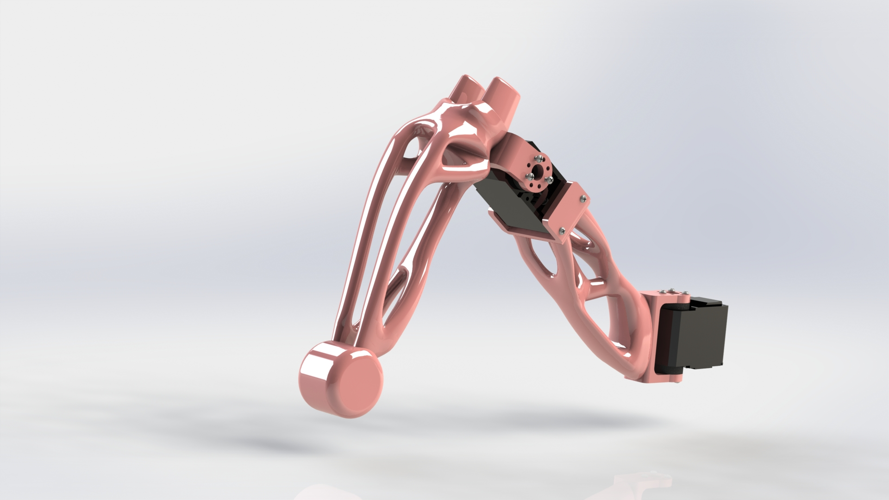
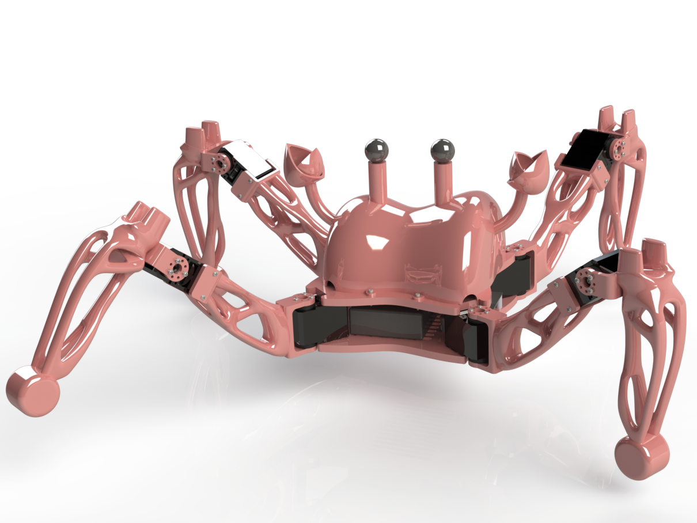
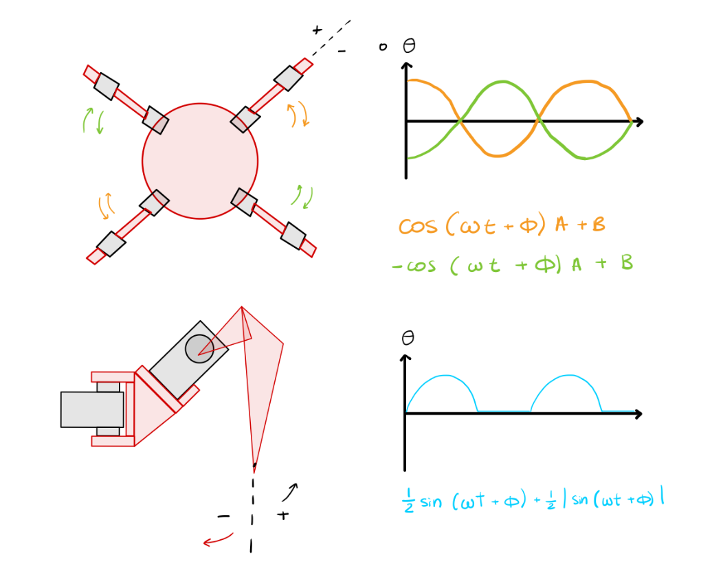

Crab.io
A quadruped robot known for being cute and being fast!
Description:
As part of the Robotics Studio course at Columbia University, my partner Valentina Gonzalez and I designed and built this unique walking robot.
Topology Optimization
To go fast, crab.io had to be light, and topology optimization allowed us to keep the robot lightweight!

Gallery

